王红元
微博：coderwhy
微信：372623326


 内容概述
内容概述
认识路由
vue-router基本使用
vue-router嵌套路由
vue-router参数传递
vue-router导航守卫

keep-alive

 什么是路由？
什么是路由？
说起路由你想起了什么？
路由是一个网络工程里面的术语。
额, 啥玩意? 没听懂
在生活中, 我们有没有听说过路由的概念呢? 当然了, 路由器嘛.
路由器是做什么的? 你有想过吗?
路由器提供了两种机制: 路由和转送.
路由是决定数据包从来源到目的地的路径.
转送将输入端的数据转移到合适的输出端.
路由中有一个非常重要的概念叫路由表.

路由表本质上就是一个映射表, 决定了数据包的指向.

 后端路由阶段
后端路由阶段
早期的网站开发整个HTML页面是由服务器来渲染的.
服务器直接生产渲染好对应的HTML页面, 返回给客户端进行展示.
但是, 一个网站, 这么多页面服务器如何处理呢?
一个页面有自己对应的网址, 也就是URL.
URL会发送到服务器, 服务器会通过正则对该URL进行匹配, 并且最后交给一个Controller进行处理.
Controller进行各种处理, 最终生成HTML或者数据, 返回给前端.
这就完成了一个IO操作.
上面的这种操作, 就是后端路由.
当我们页面中需要请求不同的路径内容时, 交给服务器来进行处理, 服务器渲染好整个页面, 并且将页面返回给客户顿.
这种情况下渲染好的页面, 不需要单独加载任何的js和css, 可以直接交给浏览器展示, 这样也有利于SEO的优化.
后端路由的缺点:
一种情况是整个页面的模块由后端人员来编写和维护的.
另一种情况是前端开发人员如果要开发页面, 需要通过PHP和Java等语言来编写页面代码.

而且通常情况下HTML代码和数据以及对应的逻辑会混在一起, 编写和维护都是非常糟糕的事情.


前后端分离阶段：
随着Ajax的出现, 有了前后端分离的开发模式.
后端只提供API来返回数据, 前端通过Ajax获取数据, 并且可以通过JavaScript将数据渲染到页面中.
这样做最大的优点就是前后端责任的清晰, 后端专注于数据上, 前端专注于交互和可视化上.
并且当移动端(iOS/Android)出现后, 后端不需要进行任何处理, 依然使用之前的一套API即可.
目前很多的网站依然采用这种模式开发.
其实SPA最主要的特点就是在前后端分离的基础上加了一层前端路由.
也就是前端来维护一套路由规则.
前端路由的核心是什么呢？
改变URL，但是页面不进行整体的刷新。

如何实现呢？


URL的hash
URL的hash也就是锚点(#), 本质上是改变window.location的href属性.

我们可以通过直接赋值location.hash来改变href, 但是页面不发生刷新
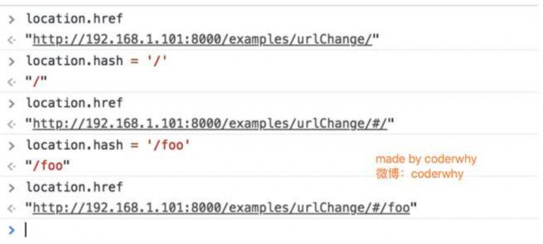


HTML5的history模式：pushState
history接口是HTML5新增的, 它有五种模式改变URL而不刷新页面.

history.pushState()
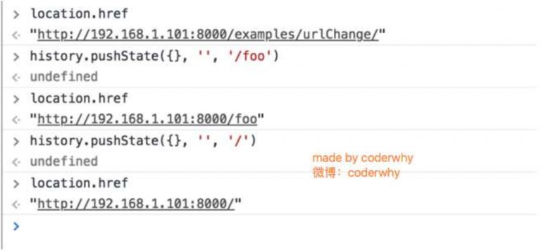


HTML5的history模式：replaceState

history.replaceState()
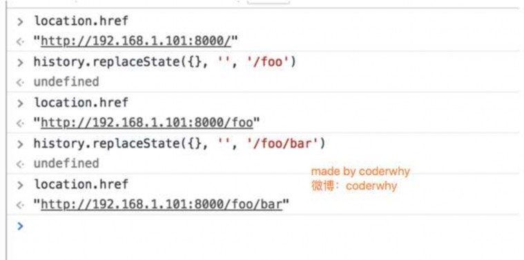


history.go()
HTML5的history模式：go
补充说明：
上面只演示了三个方法
因为 history.back() 等价于 history.go(-1)
history.forward() 则等价于 history.go(1)
这三个接口等同于浏览器界面的前进后退。
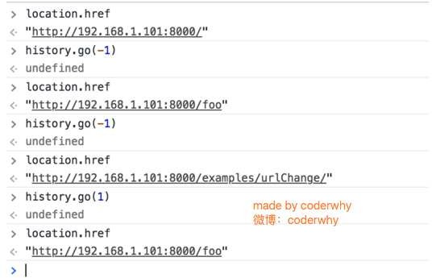


目前前端流行的三大框架, 都有自己的路由实现:
Angular的ngRouter
React的ReactRouter
Vue的vue-router
当然, 我们的重点是vue-router
vue-router是Vue.js官方的路由插件，它和vue.js是深度集成的，适合用于构建单页面应用。
我们可以访问其官方网站对其进行学习: https://router.vuejs.org/zh/
vue-router是基于路由和组件的
路由用于设定访问路径, 将路径和组件映射起来.

在vue-router的单页面应用中, 页面的路径的改变就是组件的切换.


因为我们已经学习了webpack, 后续开发中我们主要是通过工程化的方式进行开发的.
所以在后续, 我们直接使用npm来安装路由即可.
步骤一: 安装vue-router
npm install vue-router --save
步骤二: 在模块化工程中使用它(因为是一个插件, 所以可以通过Vue.use()来安装路由功能)
import Vue from 'vue'
import VueRouter from 'vue-router'
Vue.use(VueRouter)
第一步：导入路由对象，并且调用 Vue.use(VueRouter)
第二步：创建路由实例，并且传入路由映射配置
第三步：在Vue实例中挂载创建的路由实例
使用vue-router的步骤:
第一步: 创建路由组件
第二步: 配置路由映射: 组件和路径映射关系

第三步: 使用路由: 通过<router-link>和<router-view>
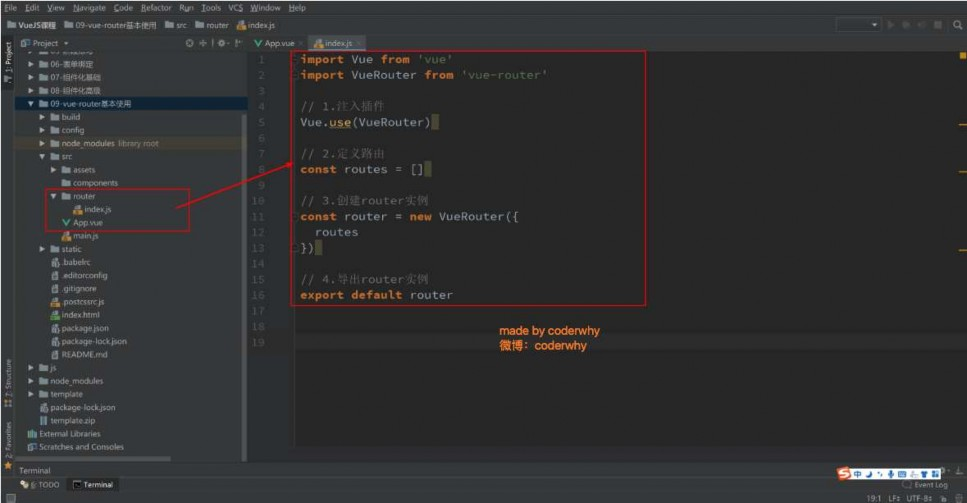


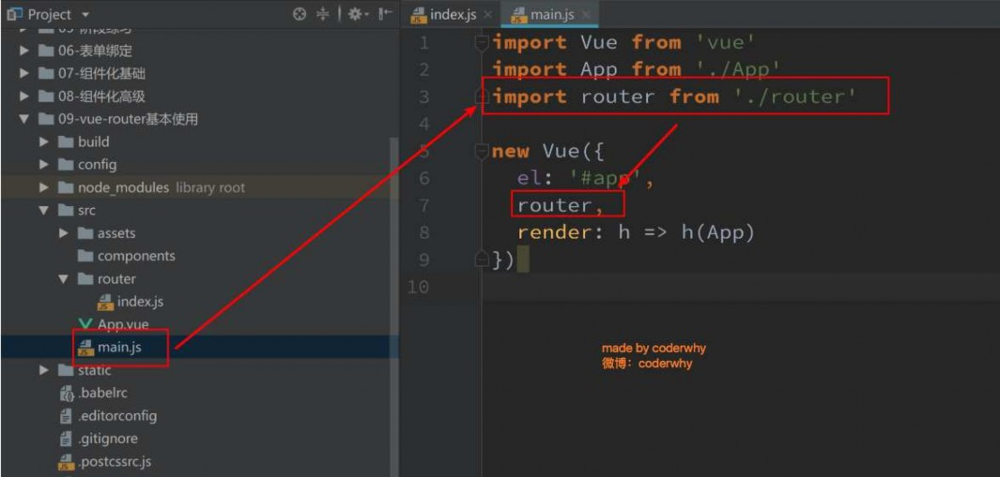


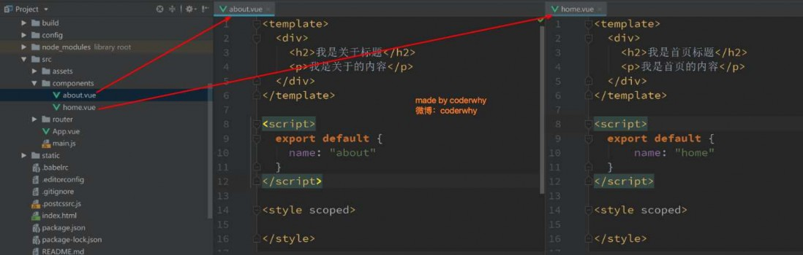


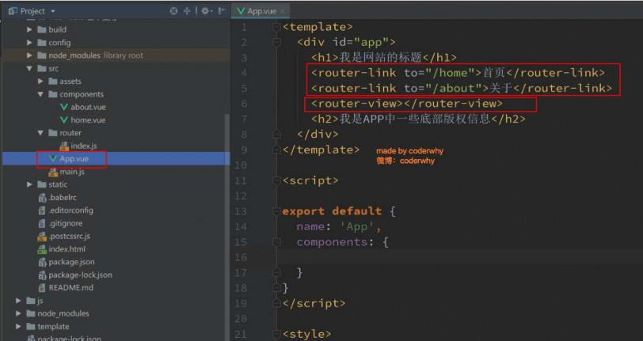
<router-link>: 该标签是一个
vue-router中已经内置的组件,
它会被渲染成一个<a>标签.
<router-view>: 该标签会根据
当前的路径, 动态渲染出不同
的组件.
网页的其他内容, 比如顶部的
标题/导航, 或者底部的一些版
权信息等会和<router-view>处
于同一个等级.
在路由切换时, 切换的是

<router-view>挂载的组件, 其
他内容不会发生改变.
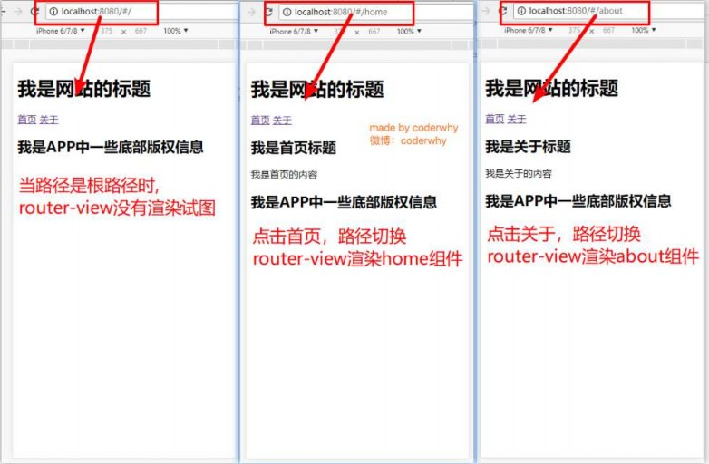


我们这里还有一个不太好的实现:
默认情况下, 进入网站的首页, 我们希望<router-view>渲染首页的内容.
但是我们的实现中, 默认没有显示首页组件, 必须让用户点击才可以.
如何可以让路径默认跳到到首页, 并且<router-view>渲染首页组件呢?
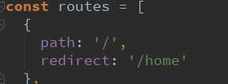
非常简单, 我们只需要配置多配置一个映射就可以了.
配置解析:
我们在routes中又配置了一个映射.
path配置的是根路径: /

redirect是重定向, 也就是我们将根路径重定向到/home的路径下, 这样就可以得到我们想要的结果了.


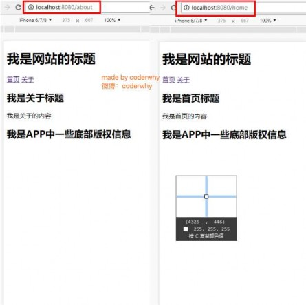
我们前面说过改变路径的方式有两种:
URL的hash
HTML5的history
默认情况下, 路径的改变使用的URL的hash.

如果希望使用HTML5的history模式, 非常简单, 进行如下配置即可:
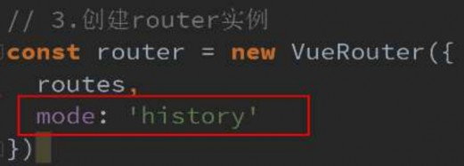


在前面的<router-link>中, 我们只是使用了一个属性: to, 用于指定跳转的路径.
<router-link>还有一些其他属性:
<router-link to='/home' tag='li'>
tag: tag可以指定<router-link>之后渲染成什么组件, 比如上面的代码会被渲染成一个<li>元素, 而不是<a>
replace: replace不会留下history记录, 所以指定replace的情况下, 后退键返回不能返回到上一个页面中
active-class: 当<router-link>对应的路由匹配成功时, 会自动给当前元素设置一个router-link-active的class,
设置active-class可以修改默认的名称.
在进行高亮显示的导航菜单或者底部tabbar时, 会使用到该类.

但是通常不会修改类的属性, 会直接使用默认的router-link-active即可.
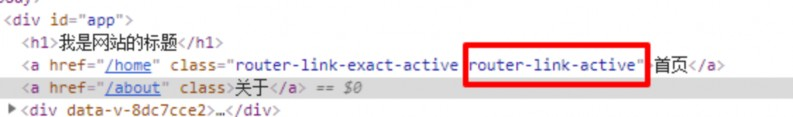


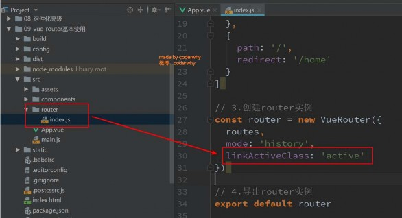
该class具体的名称也可以通过router实例的属性进行修改
exact-active-class
类似于active-class, 只是在精准匹配下才会
出现的class.

后面看到嵌套路由时, 我们再看下这个属
性.
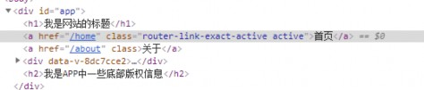


有时候, 页面的跳转可能需要执行对应的JavaScript代码, 这个时候, 就可以使用第二种跳转方式了

比如, 我们将代码修改如下:
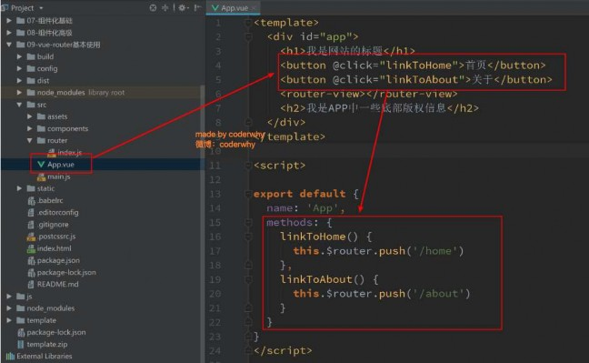


在某些情况下，一个页面的path路径可能是不确定的，比如我们进入用户界面时，希望是如下的路径：
/user/aaaa或/user/bbbb
除了有前面的/user之外，后面还跟上了用户的ID

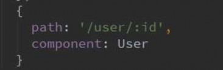
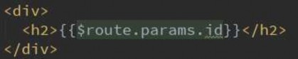
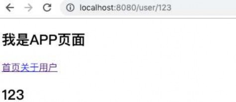
这种path和Component的匹配关系，我们称之为动态路由(也是路由传递数据的一种方式)。
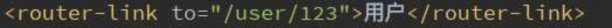

 认识路由的懒加载
认识路由的懒加载
官方给出了解释:
当打包构建应用时，Javascript 包会变得非常大，影响页面加载。
如果我们能把不同路由对应的组件分割成不同的代码块，然后当路由被访问的时候才加载对应组件，这样就更
加高效了
官方在说什么呢?
首先, 我们知道路由中通常会定义很多不同的页面.
这个页面最后被打包在哪里呢? 一般情况下, 是放在一个js文件中.
但是, 页面这么多放在一个js文件中, 必然会造成这个页面非常的大.
如果我们一次性从服务器请求下来这个页面, 可能需要花费一定的时间, 甚至用户的电脑上还出现了短暂空白的
情况.
如何避免这种情况呢? 使用路由懒加载就可以了.
路由懒加载做了什么?
路由懒加载的主要作用就是将路由对应的组件打包成一个个的js代码块.

只有在这个路由被访问到的时候, 才加载对应的组件


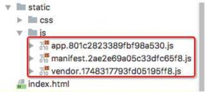
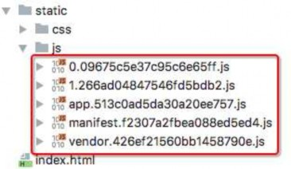
 路由懒加载的效果
路由懒加载的效果
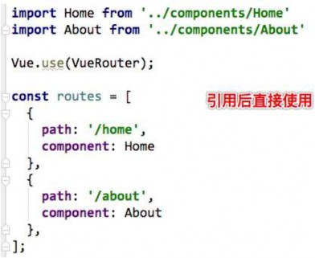 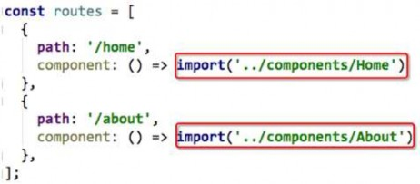

 懒加载的方式
懒加载的方式
方式一: 结合Vue的异步组件和Webpack的代码分析.
const Home = resolve => { require.ensure(['../components/Home.vue'], () =>
{ resolve(require('../components/Home.vue')) })};
方式二: AMD写法
const About = resolve => require(['../components/About.vue'], resolve);
方式三: 在ES6中, 我们可以有更加简单的写法来组织Vue异步组件和Webpack的代码分割.

const Home = () => import('../components/Home.vue')


嵌套路由是一个很常见的功能
比如在home页面中, 我们希望通过/home/news和/home/message访问一些内容.
一个路径映射一个组件, 访问这两个路径也会分别渲染两个组件.
路径和组件的关系如下:

实现嵌套路由有两个步骤:
创建对应的子组件, 并且在路由映射中配置对应的子路由.

在组件内部使用<router-view>标签.


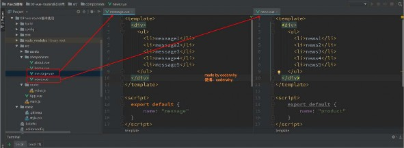
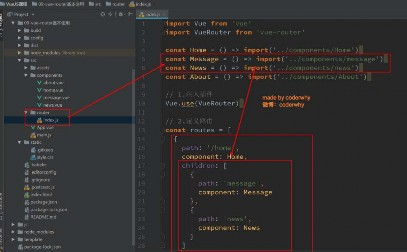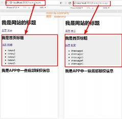
定义两个组件:
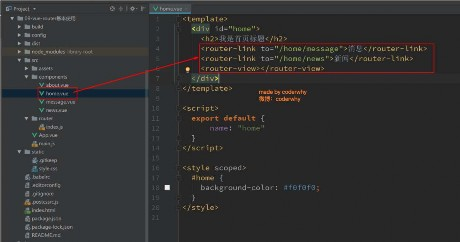


嵌套路由也可以配置默认的路径, 配置方式如下:
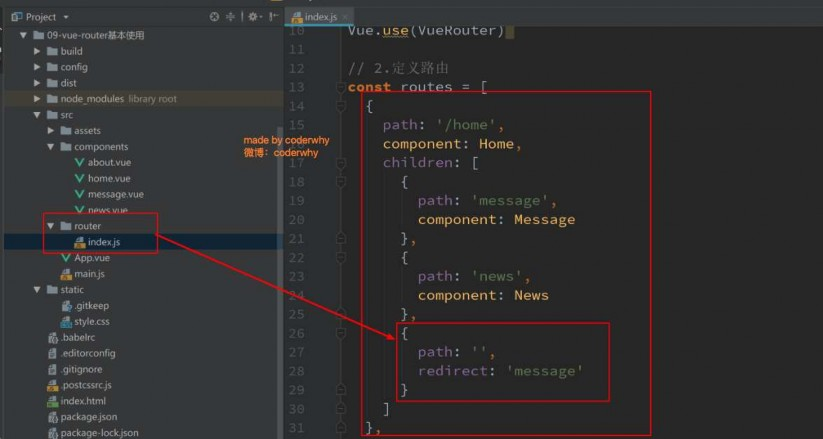


 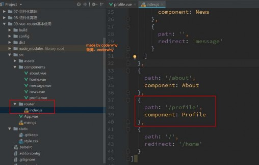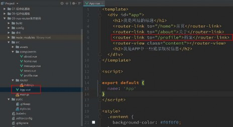
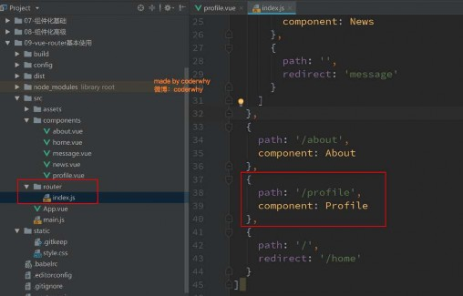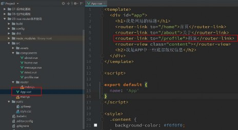
为了演示传递参数, 我们这里再创建一个组件, 并且将其配置好
第一步: 创建新的组件Profile.vue
第二步: 配置路由映射

第三步: 添加跳转的<router-link>


传递参数主要有两种类型: params和query
配置路由格式: /router/:id
传递的方式: 在path后面跟上对应的值
传递后形成的路径: /router/123, /router/abc
配置路由格式: /router, 也就是普通配置
传递的方式: 对象中使用query的key作为传递方式
传递后形成的路径: /router?id=123, /router?id=abc

如何使用它们呢? 也有两种方式: <router-link>的方式和JavaScript代码方式


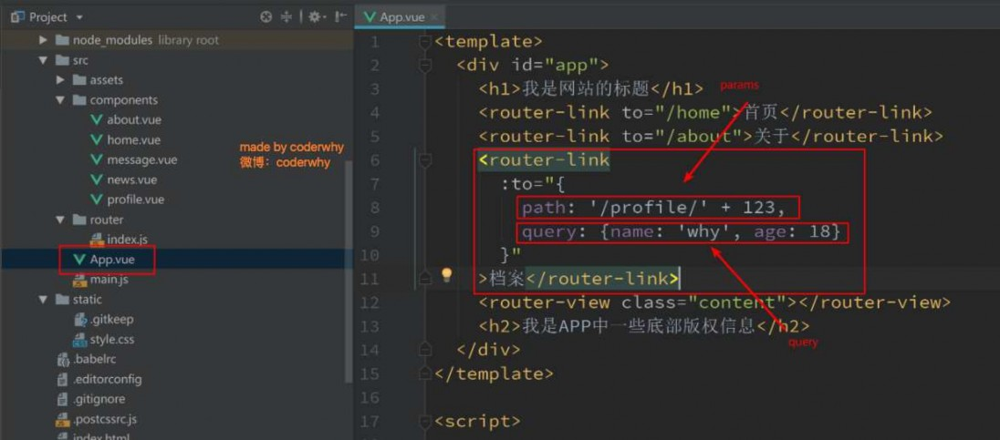


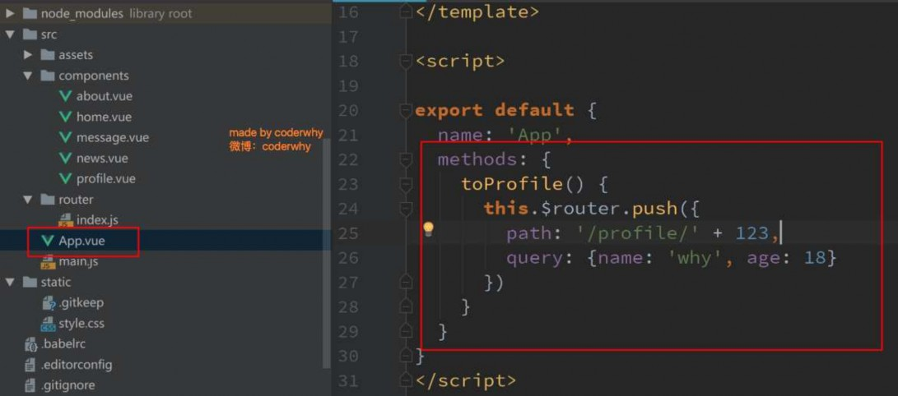


获取参数通过$route对象获取的.
在使用了 vue-router 的应用中，路由对象会被注入每个组件中，赋值为 this.$route ，并且当路由切换时，路
由对象会被更新。

通过$route获取传递的信息如下:
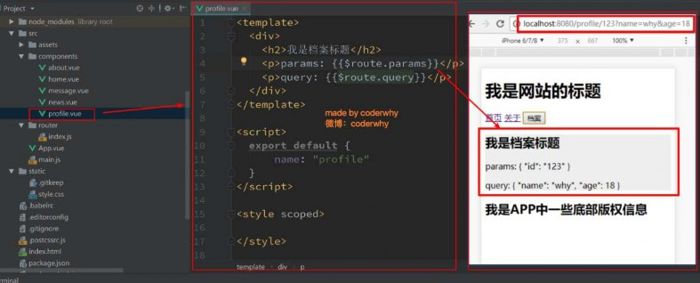


$route和$router是有区别的
$router为VueRouter实例，想要导航到不同URL，则使用$router.push方法

$route为当前router跳转对象里面可以获取name、path、query、params等
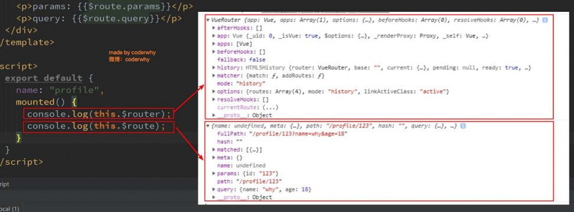


我们来考虑一个需求: 在一个SPA应用中, 如何改变网页的标题呢?
网页标题是通过<title>来显示的, 但是SPA只有一个固定的HTML, 切换不同的页面时, 标题并不会改变.
但是我们可以通过JavaScript来修改<title>的内容.window.document.title = '新的标题'.
那么在Vue项目中, 在哪里修改? 什么时候修改比较合适呢?
普通的修改方式:
我们比较容易想到的修改标题的位置是每一个路由对应的组件.vue文件中.
通过mounted声明周期函数, 执行对应的代码进行修改即可.
但是当页面比较多时, 这种方式不容易维护(因为需要在多个页面执行类似的代码).
有没有更好的办法呢? 使用导航守卫即可.
什么是导航守卫?
vue-router提供的导航守卫主要用来监听监听路由的进入和离开的.

vue-router提供了beforeEach和afterEach的钩子函数, 它们会在路由即将改变前和改变后触发.


我们可以利用beforeEach来完成标题的修改.
首先, 我们可以在钩子当中定义一些标题, 可以利用meta来定义

其次, 利用导航守卫,修改我们的标题.
导航钩子的三个参数解析:
to: 即将要进入的目标的路由对象.
from: 当前导航即将要离开的路由对象.
next: 调用该方法后, 才能进入下一个钩子.
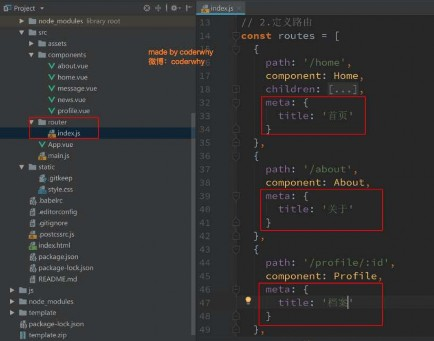 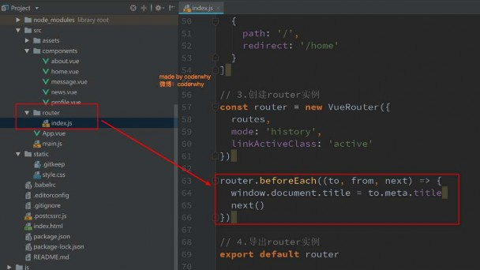


补充一:如果是后置钩子, 也就是afterEach, 不需要主动调用next()函数.
补充二: 上面我们使用的导航守卫, 被称之为全局守卫.
路由独享的守卫.
组件内的守卫.
更多内容, 可以查看官网进行学习:

https://router.vuejs.org/zh/guide/advanced/navigation-
guards.html#%E8%B7%AF%E7%94%B1%E7%8B%AC%E4%BA%AB%E7%9A%84%E5%AE%88%E5%8
D%AB


keep-alive 是 Vue 内置的一个组件，可以使被包含的组件保留状态，或避免重新渲染。
它们有两个非常重要的属性:
include - 字符串或正则表达，只有匹配的组件会被缓存
exclude - 字符串或正则表达式，任何匹配的组件都不会被缓存
router-view 也是一个组件，如果直接被包在 keep-alive 里面，所有路径匹配到的视图组件都会被缓存：
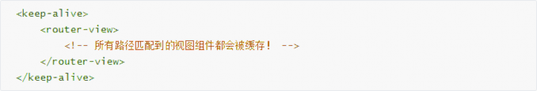

通过create声明周期函数来验证


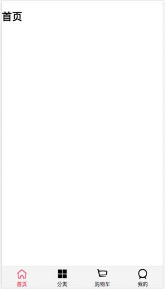
1. 如果在下方有一个单独的TabBar组件，你如何封装
自定义TabBar组件，在APP中使用
让TabBar出于底部，并且设置相关的样式
2.TabBar中显示的内容由外界决定
定义插槽
flex布局平分TabBar
3.自定义TabBarItem，可以传入 图片和文字
定义TabBarItem，并且定义两个插槽：图片、文字。
给两个插槽外层包装div，用于设置样式。

填充插槽，实现底部TabBar的效果


4.传入 高亮图片
定义另外一个插槽，插入active-icon的数据
定义一个变量isActive，通过v-show来决定是否显示对应的icon
5.TabBarItem绑定路由数据
安装路由：npm install vue-router —save
完成router/index.js的内容，以及创建对应的组件
main.js中注册router
APP中加入<router-view>组件
6.点击item跳转到对应路由，并且动态决定isActive
监听item的点击，通过this.$router.replace()替换路由路径
通过this.$route.path.indexOf(this.link) !== -1来判断是否是active
7.动态计算active样式

封装新的计算属性：this.isActive ? {'color': 'red'} : {}
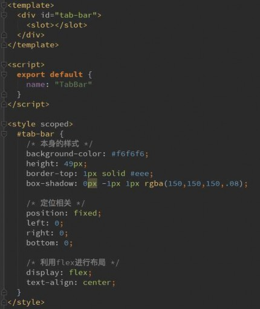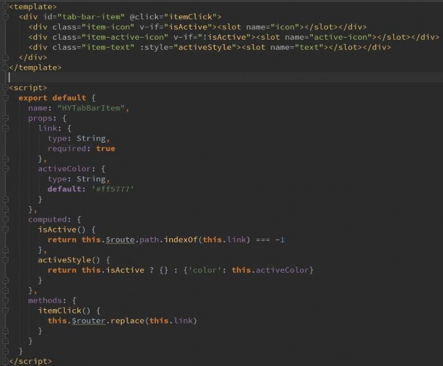